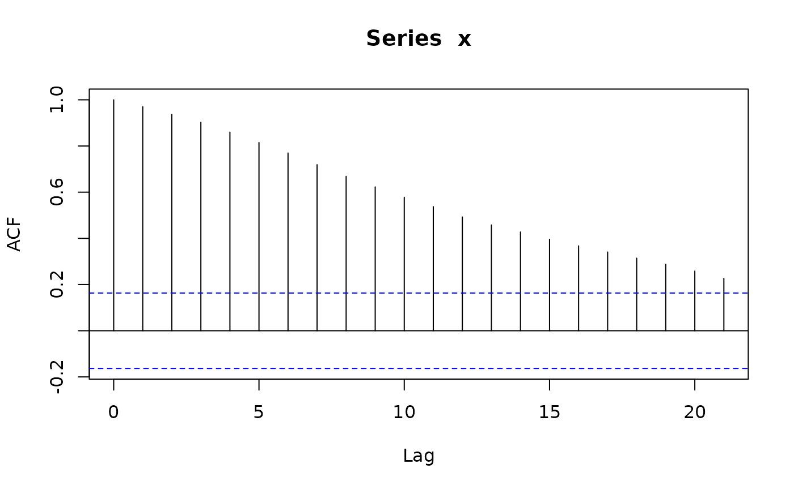

Simulate trajectories of seasonal arima models
sim_sarima.RdSimulate trajectories of seasonal arima models.
Usage
sim_sarima(model, n = NA, rand.gen = rnorm, n.start = NA, x, eps,
xcenter = NULL, xintercept = NULL, ...)Arguments
- model
specification of the model, a list, see `Details'.
- rand.gen
random number generator for the innovations.
- n
length of the time series.
- n.start
number of burn-in observations.
- x
initial/before values of the time series, a list, a numeric vector or time series, see Details.
- eps
initial/before values of the innovations, a list or a numeric vector, see Details.
- xintercept
non-constant intercept which may represent trend or covariate effects.
- xcenter
currently ignored.
- ...
additional arguments for
arima.simandrand.gen, see `Details'.
Details
The model is specified by the argument "model" which is a list with
elements suitable to be passed to new("SarimaModel", ...), see
the description of class "SarimaModel". Here are some of the
possible components:
- nseasons
number of seasons in a year (or whatever is the larger time unit)
- iorder
order of differencing, specifies the factor \((1-B)^{d1}\) for the model.
- siorder
order of seasonal differencing, specifies the factor \((1-B^{period})^{ds}\) for the model.
- ar
ar parameters (non-seasonal)
- ma
ma parameters (non-seasonal)
- sar
seasonal ar parameters
- sma
seasonal ma parameters
Additional arguments for rand.gen may be specified
via the "..." argument.
In particular, the length of the generated series is specified with
argument n. Arguments for rand.gen can also be passed
via the "..." argument.
sim_sarima calls internally arima.sim to simulate the
ARMA part of the model. Then undifferences the result to obtain the
end result.
The function returns the simulated time series from the requested model.
Information about the model is printed on the screen if
info = "print". To suppress this, set info to any other
value.
For multple simulations with the same (or almost the same) setup, it is
better to execute prepareSimSarima once and call the
function returned by it as many times as needed.
Examples
require("PolynomF") # guaranteed to be available since package "sarima" imports it.
#> Loading required package: PolynomF
x <- sim_sarima(n=144, model = list(ma=0.8)) # MA(1)
x <- sim_sarima(n=144, model = list(ar=0.8)) # AR(1)
x <- sim_sarima(n=144, model = list(ar=c(rep(0,11),0.8))) # SAR(1), 12 seasons
x <- sim_sarima(n=144, model = list(ma=c(rep(0,11),0.8))) # SMA(1)
# more enlightened SAR(1) and SMA(1)
x <- sim_sarima(n=144,model=list(sar=0.8, nseasons=12, sigma2 = 1)) # SAR(1), 12 seasons
x <- sim_sarima(n=144,model=list(sma=0.8, nseasons=12, sigma2 = 1)) # SMA(1)
x <- sim_sarima(n=144, model = list(iorder=1, sigma2 = 1)) # (1-B)X_t = e_t (random walk)
acf(x)

acf(diff(x))
 x <- sim_sarima(n=144, model = list(iorder=2, sigma2 = 1)) # (1-B)^2 X_t = e_t
x <- sim_sarima(n=144, model = list(siorder=1,
nseasons=12, sigma2 = 1)) # (1-B)^{12} X_t = e_t
x <- sim_sarima(n=144, model = list(iorder=1, siorder=1,
nseasons=12, sigma2 = 1))
x <- sim_sarima(n=144, model = list(ma=0.4, iorder=1, siorder=1,
nseasons=12, sigma2 = 1))
x <- sim_sarima(n=144, model = list(ma=0.4, sma=0.7, iorder=1, siorder=1,
nseasons=12, sigma2 = 1))
x <- sim_sarima(n=144, model = list(ar=c(1.2,-0.8), ma=0.4,
sar=0.3, sma=0.7, iorder=1, siorder=1,
nseasons=12, sigma2 = 1))
x <- sim_sarima(n=144, model = list(iorder=1, siorder=1,
nseasons=12, sigma2 = 1),
x = list(init=AirPassengers[1:13]))
p <- polynom(c(1,-1.2,0.8))
solve(p)
#> [1] 0.75-0.8291562i 0.75+0.8291562i
abs(solve(p))
#> [1] 1.118034 1.118034
sim_sarima(n=144, model = list(ar=c(1.2,-0.8), ma=0.4, sar=0.3, sma=0.7,
iorder=1, siorder=1, nseasons=12))
#> [1] 0.00000000 0.00000000 0.00000000 0.00000000 0.00000000
#> [6] 0.00000000 0.00000000 0.00000000 0.00000000 0.00000000
#> [11] 0.00000000 0.00000000 0.00000000 0.00000000 0.00000000
#> [16] 0.00000000 0.00000000 0.00000000 0.00000000 0.00000000
#> [21] 0.00000000 0.00000000 0.00000000 0.00000000 0.00000000
#> [26] 0.00000000 0.00000000 -0.88556728 -1.10759562 -0.83126878
#> [31] 2.40860860 8.23910434 12.35197282 11.71731613 7.08773949
#> [36] 3.58966080 3.50188228 6.34588515 7.87336872 3.33640124
#> [41] -0.07977841 1.86758658 13.15897741 30.24210305 41.83958969
#> [46] 41.51924962 32.10510235 24.26109613 22.16154909 28.57085956
#> [51] 34.37750381 28.68899667 22.74822488 24.60131098 38.50107659
#> [56] 59.94451092 74.55669888 74.92859620 66.48901446 61.89682892
#> [61] 61.34429732 68.76834850 73.71593474 65.54445424 58.18781662
#> [66] 61.55353447 78.04596544 101.54136703 117.76055822 119.64106986
#> [71] 114.42528093 116.13594339 120.31218045 128.59712801 130.99507295
#> [76] 120.45224643 113.80739622 121.51487801 142.52910386 167.29001248
#> [81] 182.94818958 183.18293524 177.99251456 182.37550463 188.93398759
#> [86] 196.91232865 198.03491634 186.23324928 178.91414905 188.26135857
#> [91] 210.29778730 234.47525869 250.97361259 253.15180360 252.20354161
#> [96] 260.79154447 266.65998953 266.62503748 259.61560284 245.14677660
#> [101] 241.48599551 258.37553407 286.87894137 313.79316269 331.39758534
#> [106] 333.85169120 334.18578696 344.78923210 350.22290301 344.46283578
#> [111] 331.40321626 317.23600531 320.25676496 345.27665415 379.38886055
#> [116] 407.68288831 422.89740605 422.76910711 421.61670156 431.90747579
#> [121] 438.32018059 432.22584998 418.01226220 403.27928621 406.38755651
#> [126] 430.30663050 462.53806471 491.06687838 506.71610317 505.82523456
#> [131] 500.86114576 504.71000704 506.65178297 499.83295730 487.29237084
#> [136] 473.56277528 476.93308194 500.88168645 533.10776243 560.25663379
#> [141] 571.72061119 567.35535729 559.03163349 559.22690570
x <- sim_sarima(n=144, model=list(ma=0.4, iorder=1, siorder=1, nseasons=12))
acf(x, lag.max=48)
x <- sim_sarima(n=144, model=list(sma=0.4, iorder=1, siorder=1, nseasons=12))
acf(x, lag.max=48)
x <- sim_sarima(n=144, model = list(iorder=2, sigma2 = 1)) # (1-B)^2 X_t = e_t
x <- sim_sarima(n=144, model = list(siorder=1,
nseasons=12, sigma2 = 1)) # (1-B)^{12} X_t = e_t
x <- sim_sarima(n=144, model = list(iorder=1, siorder=1,
nseasons=12, sigma2 = 1))
x <- sim_sarima(n=144, model = list(ma=0.4, iorder=1, siorder=1,
nseasons=12, sigma2 = 1))
x <- sim_sarima(n=144, model = list(ma=0.4, sma=0.7, iorder=1, siorder=1,
nseasons=12, sigma2 = 1))
x <- sim_sarima(n=144, model = list(ar=c(1.2,-0.8), ma=0.4,
sar=0.3, sma=0.7, iorder=1, siorder=1,
nseasons=12, sigma2 = 1))
x <- sim_sarima(n=144, model = list(iorder=1, siorder=1,
nseasons=12, sigma2 = 1),
x = list(init=AirPassengers[1:13]))
p <- polynom(c(1,-1.2,0.8))
solve(p)
#> [1] 0.75-0.8291562i 0.75+0.8291562i
abs(solve(p))
#> [1] 1.118034 1.118034
sim_sarima(n=144, model = list(ar=c(1.2,-0.8), ma=0.4, sar=0.3, sma=0.7,
iorder=1, siorder=1, nseasons=12))
#> [1] 0.00000000 0.00000000 0.00000000 0.00000000 0.00000000
#> [6] 0.00000000 0.00000000 0.00000000 0.00000000 0.00000000
#> [11] 0.00000000 0.00000000 0.00000000 0.00000000 0.00000000
#> [16] 0.00000000 0.00000000 0.00000000 0.00000000 0.00000000
#> [21] 0.00000000 0.00000000 0.00000000 0.00000000 0.00000000
#> [26] 0.00000000 0.00000000 -0.88556728 -1.10759562 -0.83126878
#> [31] 2.40860860 8.23910434 12.35197282 11.71731613 7.08773949
#> [36] 3.58966080 3.50188228 6.34588515 7.87336872 3.33640124
#> [41] -0.07977841 1.86758658 13.15897741 30.24210305 41.83958969
#> [46] 41.51924962 32.10510235 24.26109613 22.16154909 28.57085956
#> [51] 34.37750381 28.68899667 22.74822488 24.60131098 38.50107659
#> [56] 59.94451092 74.55669888 74.92859620 66.48901446 61.89682892
#> [61] 61.34429732 68.76834850 73.71593474 65.54445424 58.18781662
#> [66] 61.55353447 78.04596544 101.54136703 117.76055822 119.64106986
#> [71] 114.42528093 116.13594339 120.31218045 128.59712801 130.99507295
#> [76] 120.45224643 113.80739622 121.51487801 142.52910386 167.29001248
#> [81] 182.94818958 183.18293524 177.99251456 182.37550463 188.93398759
#> [86] 196.91232865 198.03491634 186.23324928 178.91414905 188.26135857
#> [91] 210.29778730 234.47525869 250.97361259 253.15180360 252.20354161
#> [96] 260.79154447 266.65998953 266.62503748 259.61560284 245.14677660
#> [101] 241.48599551 258.37553407 286.87894137 313.79316269 331.39758534
#> [106] 333.85169120 334.18578696 344.78923210 350.22290301 344.46283578
#> [111] 331.40321626 317.23600531 320.25676496 345.27665415 379.38886055
#> [116] 407.68288831 422.89740605 422.76910711 421.61670156 431.90747579
#> [121] 438.32018059 432.22584998 418.01226220 403.27928621 406.38755651
#> [126] 430.30663050 462.53806471 491.06687838 506.71610317 505.82523456
#> [131] 500.86114576 504.71000704 506.65178297 499.83295730 487.29237084
#> [136] 473.56277528 476.93308194 500.88168645 533.10776243 560.25663379
#> [141] 571.72061119 567.35535729 559.03163349 559.22690570
x <- sim_sarima(n=144, model=list(ma=0.4, iorder=1, siorder=1, nseasons=12))
acf(x, lag.max=48)
x <- sim_sarima(n=144, model=list(sma=0.4, iorder=1, siorder=1, nseasons=12))
acf(x, lag.max=48)
 x <- sim_sarima(n=144, model=list(sma=0.4, iorder=0, siorder=0, nseasons=12))
acf(x, lag.max=48)
x <- sim_sarima(n=144, model=list(sma=0.4, iorder=0, siorder=0, nseasons=12))
acf(x, lag.max=48)
 x <- sim_sarima(n=144, model=list(sar=0.4, iorder=0, siorder=0, nseasons=12))
acf(x, lag.max=48)
x <- sim_sarima(n=144, model=list(sar=0.4, iorder=0, siorder=0, nseasons=12))
acf(x, lag.max=48)
 x <- sim_sarima(n=144, model=list(sar=-0.4, iorder=0, siorder=0, nseasons=12))
acf(x, lag.max=48)
x <- sim_sarima(n=144, model=list(sar=-0.4, iorder=0, siorder=0, nseasons=12))
acf(x, lag.max=48)
 x <- sim_sarima(n=144, model=list(ar=c(1.2, -0.8), ma=0.4, sar=0.3, sma=0.7,
iorder=1, siorder=1, nseasons=12))
## use xintercept to include arbitrary trend/covariates
sim_sarima(n = 144, model = list(sma = 0.4, ma = 0.4, sar = 0.8, ar = 0.5,
nseasons = 12, sigma2 = 1), xintercept = 1:144)
#> [1] -3.31496470 -0.07474834 -2.78371923 -4.59503544 -6.05465104
#> [6] -4.67013781 -3.59406898 -1.78059908 -2.19849076 -0.79691249
#> [11] -8.09840127 -10.73076651 -9.71685514 10.83324222 18.01817447
#> [16] 20.86048317 24.93475169 28.01861725 29.89269596 34.17449222
#> [21] 38.79728679 41.32505930 36.09821015 34.99545895 37.44124893
#> [26] 58.16006898 67.49884618 72.01359543 76.55208739 80.17049685
#> [31] 82.21290596 86.87799720 96.09577256 99.42359066 96.14250139
#> [36] 97.32516810 101.34041246 119.52035862 129.77161454 136.25618548
#> [41] 141.88892865 145.32164535 147.20724995 151.98909680 162.55667212
#> [46] 168.13978646 166.13474458 168.68978000 175.88902474 192.27167441
#> [51] 202.22283516 209.49526192 214.72771045 220.17677236 223.88793258
#> [56] 229.21792740 241.43098697 246.56269499 247.02311998 252.08717175
#> [61] 262.20877129 277.12807015 287.21096426 295.16857558 300.81375429
#> [66] 305.69645917 310.43772945 317.48700382 330.63775960 335.21411320
#> [71] 338.01744311 343.10620179 354.17402112 367.61228098 378.97243388
#> [76] 387.13018575 393.07526232 399.17264929 404.25654727 411.46313077
#> [81] 426.30872396 432.58852067 436.45413545 441.07915520 450.32594620
#> [86] 464.02366586 476.47162642 483.40691441 489.69019531 496.83520131
#> [91] 502.42383963 509.17295340 524.57360281 532.50857199 537.64044155
#> [96] 542.45510510 550.63156479 564.45128739 576.23252747 583.51447829
#> [101] 591.91436180 600.66825989 605.95884975 611.63080701 627.20634729
#> [106] 634.84972147 641.35174531 647.02105185 654.32715069 667.69611065
#> [111] 680.24258537 688.62182006 697.20602109 707.19097702 711.60724342
#> [116] 719.36216681 733.21190860 741.79927513 750.39513900 756.82704995
#> [121] 763.53862468 775.66963765 788.30538803 797.61730972 804.38357893
#> [126] 813.59397141 819.57546822 829.46131755 842.64731902 851.39116563
#> [131] 862.00435270 869.34798428 876.00853881 887.41944569 898.81806545
#> [136] 906.09114114 913.66307605 921.97779596 929.61686378 942.14062569
#> [141] 955.38211342 962.52639160 971.09032983 980.09369425
x <- sim_sarima(n=144, model=list(ar=c(1.2, -0.8), ma=0.4, sar=0.3, sma=0.7,
iorder=1, siorder=1, nseasons=12))
## use xintercept to include arbitrary trend/covariates
sim_sarima(n = 144, model = list(sma = 0.4, ma = 0.4, sar = 0.8, ar = 0.5,
nseasons = 12, sigma2 = 1), xintercept = 1:144)
#> [1] -3.31496470 -0.07474834 -2.78371923 -4.59503544 -6.05465104
#> [6] -4.67013781 -3.59406898 -1.78059908 -2.19849076 -0.79691249
#> [11] -8.09840127 -10.73076651 -9.71685514 10.83324222 18.01817447
#> [16] 20.86048317 24.93475169 28.01861725 29.89269596 34.17449222
#> [21] 38.79728679 41.32505930 36.09821015 34.99545895 37.44124893
#> [26] 58.16006898 67.49884618 72.01359543 76.55208739 80.17049685
#> [31] 82.21290596 86.87799720 96.09577256 99.42359066 96.14250139
#> [36] 97.32516810 101.34041246 119.52035862 129.77161454 136.25618548
#> [41] 141.88892865 145.32164535 147.20724995 151.98909680 162.55667212
#> [46] 168.13978646 166.13474458 168.68978000 175.88902474 192.27167441
#> [51] 202.22283516 209.49526192 214.72771045 220.17677236 223.88793258
#> [56] 229.21792740 241.43098697 246.56269499 247.02311998 252.08717175
#> [61] 262.20877129 277.12807015 287.21096426 295.16857558 300.81375429
#> [66] 305.69645917 310.43772945 317.48700382 330.63775960 335.21411320
#> [71] 338.01744311 343.10620179 354.17402112 367.61228098 378.97243388
#> [76] 387.13018575 393.07526232 399.17264929 404.25654727 411.46313077
#> [81] 426.30872396 432.58852067 436.45413545 441.07915520 450.32594620
#> [86] 464.02366586 476.47162642 483.40691441 489.69019531 496.83520131
#> [91] 502.42383963 509.17295340 524.57360281 532.50857199 537.64044155
#> [96] 542.45510510 550.63156479 564.45128739 576.23252747 583.51447829
#> [101] 591.91436180 600.66825989 605.95884975 611.63080701 627.20634729
#> [106] 634.84972147 641.35174531 647.02105185 654.32715069 667.69611065
#> [111] 680.24258537 688.62182006 697.20602109 707.19097702 711.60724342
#> [116] 719.36216681 733.21190860 741.79927513 750.39513900 756.82704995
#> [121] 763.53862468 775.66963765 788.30538803 797.61730972 804.38357893
#> [126] 813.59397141 819.57546822 829.46131755 842.64731902 851.39116563
#> [131] 862.00435270 869.34798428 876.00853881 887.41944569 898.81806545
#> [136] 906.09114114 913.66307605 921.97779596 929.61686378 942.14062569
#> [141] 955.38211342 962.52639160 971.09032983 980.09369425